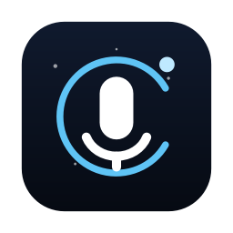

Локальная диктовка · бренд-пак 0.3.0
Микрофон в орбите: «станция на связи». Тёмный космос, циановая орбита, луна в разрыве.

mono — таймер, состояния, подпись HUD: DejaVu Sans Mono.
Основной текст интерфейса — системный шрифт sans-serif, 13–15 px.
Команды — whisper-station repaste, systemctl --user status whisper-station.